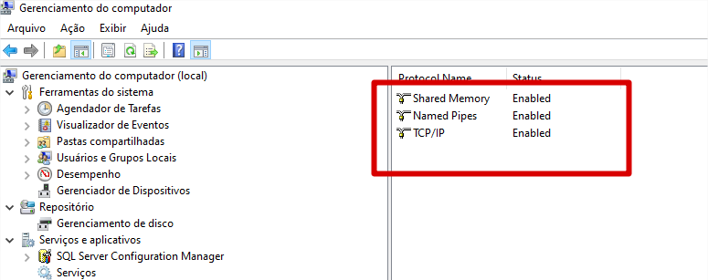
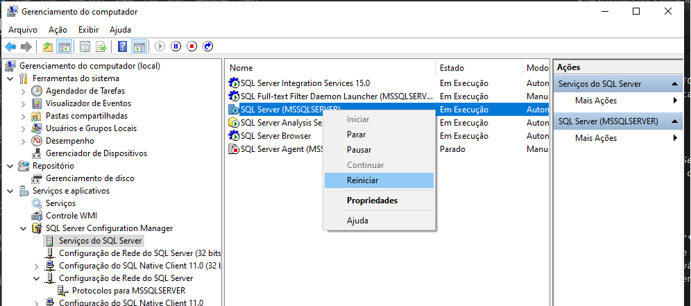
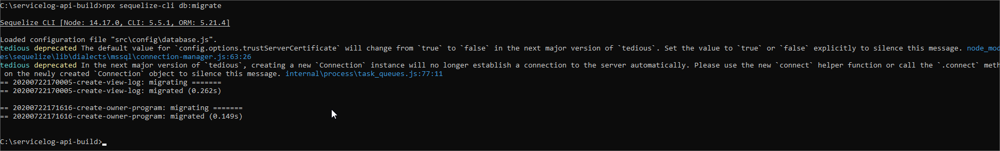
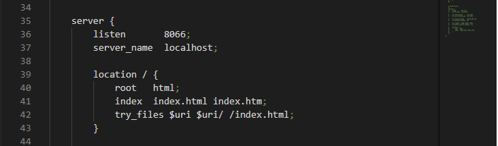
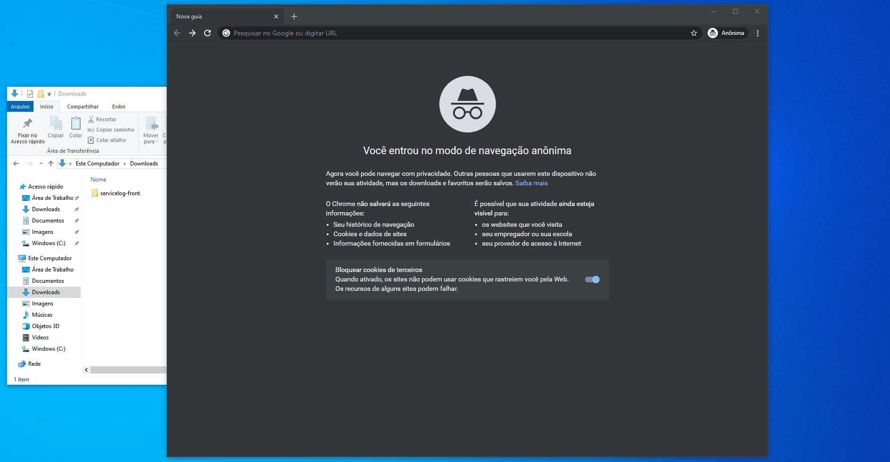

Guia de Instalação e Configuração da Dashboard de Logs
Serviço
Este serviço é utilizado para gravação e consulta dos logs dos testes realizados pelo TIR.
Requisito: Node.js v12+ Baixe aqui
✨ Instalação
- Baixe o pacote: servicelog-api-build.zip
- Extraia e abra a pasta do projeto
- Configure o arquivo
.envconforme instruções abaixo
⚙️ Configuração do Arquivo .env
Banco de Dados (DB)
TYPE: modelo de banco onde seramssqlousqliteSTORAGE: Caminho para o arquivo do banco de dados. Por padrão, o arquivo é salvo em ./db/dashboard.sqlite. (apenas para sqlite)- Para MSSQL:
INSTANCENAME: Nome da instância do SQL Server (apenas mssql).HOST: Endereço IP ou hostname do servidor onde o banco está hospedado.USERNAME: Nome de usuário com permissões de acesso ao banco.PASSWORD:Senha do usuário do banco.DATABASE: Nome do banco de dados onde os registros serão armazenados.
Caminhos de Arquivos
PATH_SERVER: Diretório onde serão salvos arquivos JSONs em caso de falha na gravação no banco.PATH_PROCESSED: Diretório onde os arquivos JSONs serão movidos após terem sido processados com sucesso, especialmente em cenários de recuperação.
Porta da Aplicação
APP_PORT: Porta de inicialização do serviço (ex: 3333)
Agendamento
-
SCHEDULE: Define a frequência de verificação de arquivos jsons da pasta configurada no "pathServer". -
Utiliza a sintaxe padrão de agendamento cron. Default:
Executa às 7h, 12h, 18h e 23h diariamente.* 7,12,18,23 * * *
Valores válidos: segundos (0-59), minutos (0-59), horas (0-23), dia do mês (1-31), mês (1-12), dia da semana (0-7)
🚀 Inicialização
No diretório /scripts-bats, execute os scripts abaixo como administrador:
install.bat- Instala dependências via npmservice-mode.bat- Instala a API como serviçorun.bat- Inicia o serviço
Para parar:
stop.bat
ℹ️ Procedimento para Microsoft SQL Server
Habilitar TCP/IP
- Pressione
Win + R> digitecompmgmt.msc - Navegue até:
Serviços e aplicativos > SQL Server Configuration Manager > SQL Server Network Configuration - Selecione a instância correta (mesma informada no .env) e habilite os protocolos TCP no menu exibido.

Habilitar serviço SQL Server Browser
- Navegue até
SQL Server Services - Com o botão direito clique em SQL Server Browser > "Iniciar"
- Se indisponível: Propriedades > aba Serviço > "Modo inicial": Automático
- Reinicie o serviço principal do SQL Server

🔧 Criação das Tabelas (MSSQL)
- Abra o terminal em
/servicelog-api-build, raiz do projeto: - Execute:
npx sequelize-cli db:migrate
🔼 Instalação do Portal Web
O portal exibe gráficos de execuções dos ciclos de forma gerencial.
- Baixe o portal: servicelog-front.zip
- Escolha um servidor web. Recomendamos o Nginx.
Nginx: Instalação e Configuração
- Baixe: Nginx Downloads
- Extraia em uma pasta
- No arquivo
conf/nginx.conf, edite: -
Inclua na chave
servero trecho a seguir:listen 8066; server_name localhost; -
Faça o mesmo para a chave
location /com o código abaixo:root html; index index.html index.htm; try_files $uri $uri/ /index.html;A alteração deve ficar semelhante ao trecho abaixo:

-
Copie todo conteudo de
/servicelog-frontpara a pastanginx-x.x.x/html - Execute
nginx.exena pasta raiz
⚠️ Certifique-se de que a
APP_PORTno.enve nohtml/assets/config/appConfig.jsonestejam iguais
- Abaixo um exemplo animado do processo:

Nginx como Serviço do Windows (opcional)
- Acesse
/servicelog-api-build/scripts-bats/nginx/ - Execute
Install-service-server.batcom permissões de administrador - Configure os campos
PatheStartup directory- Path : Ex.
Path/nginx.exe - Startup directory : Ex.
Path/to/nginx
- Path : Ex.
- Clique em "Install service"
- Execute o arquivo
Run-service-server.bat
Pronto! Seu serviço de logs e o portal estão configurados e prontos para uso.